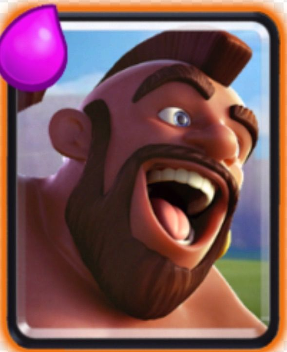
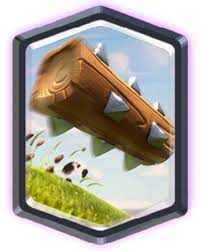

The Hog Rider card is unlocked from the Spell Valley (Arena 5). He is a very fast building-targeting, melee troop with moderately high hitpoints and damage.
Arena: Spell Valley
Release Date: 4 January 2016
Elixir Cost: 4
Rarity: Rare

The Log is 1 of the 11 cards from Clash Royale to appear in Clash Quest, the others being the Fire Spirit, Bomber, Spear Goblins, Zap, Furnace, Fireball, Goblin Hut, Rocket, Baby Dragon, and Prince. When deployed, you can hear a voice chanting "LOG". The Log can push back a burrowing Miner.
Elixir Cost: 2
Arena: Builder's Workshop
Release Date: 4 July 2016